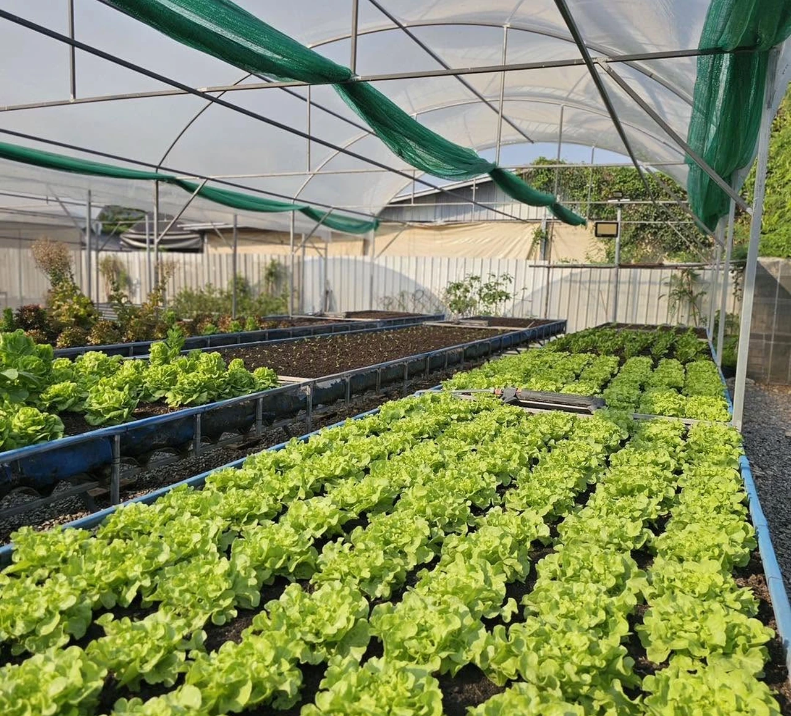
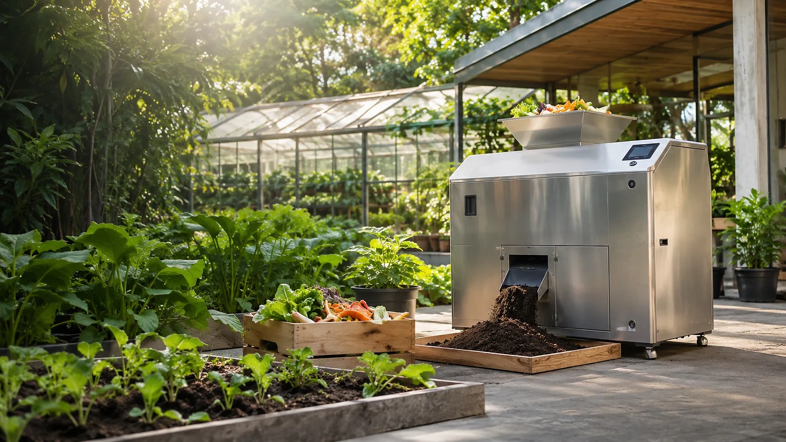
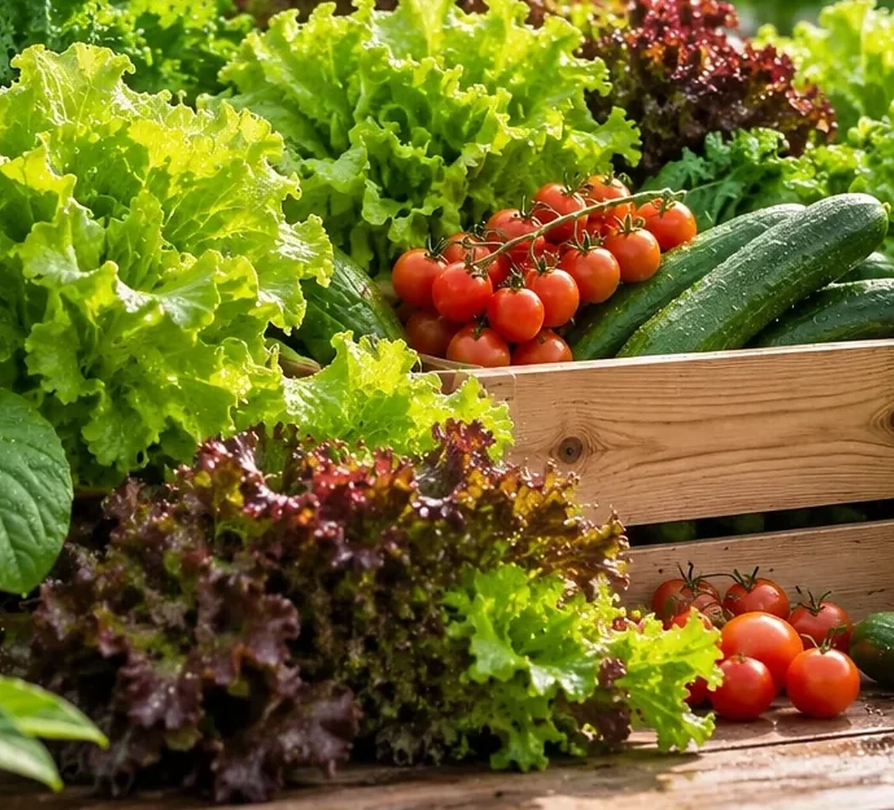

บำรุงดินด้วยของเหลือจากครัว
ใช้สารปรับปรุงดินจากเศษอาหารช่วยให้ดินร่วนซุย อุ้มน้ำดี และมีอินทรียวัตถุ
FRESH FROM CIVIO FARM
ผักสดจากฟาร์ม CIVIO ปลูกในพื้นที่โรงเรือนตามรูปแบบการเพาะปลูกของฟาร์ม ดูแลตั้งแต่การเตรียมแปลง การปลูก ไปจนถึงการเก็บเกี่ยว โดยใช้แนวทางการปลูกที่เหมาะกับชนิดผักและสภาพพื้นที่

04 / FRESH VEGETABLESผักจากฟาร์ม CIVIO เป็นส่วนหนึ่งของแนวคิดหมุนเวียนทรัพยากร เศษอาหารจากครัวและร้านอาหารถูกจัดการด้วยเครื่อง CIVIO จนได้เป็นสารปรับปรุงดิน แล้วนำกลับมาบำรุงแปลงปลูก ผักที่ได้จึงเป็นผลลัพธ์ของวงจรที่ปิดอยู่ในพื้นที่เดียวกัน
เราให้ความสำคัญกับการดูแลดินตั้งแต่ก่อนปลูก เพราะดินที่ร่วนซุยและอุดมด้วยอินทรียวัตถุช่วยให้รากแข็งแรง ต้นผักเติบโตสม่ำเสมอ และให้ผลผลิตที่สดกรอบ ทีมงานดูแลทั้งการเตรียมแปลง การปลูก การให้น้ำ และการเก็บเกี่ยว ตามชนิดผักและสภาพพื้นที่
เนื่องจากเป็นผลผลิตตามฤดูกาล รายการผักในแต่ละช่วงจึงอาจแตกต่างกัน ทีมงานพร้อมแจ้งรายการล่าสุดและช่วยแนะนำผักที่เหมาะกับการใช้งานของคุณ

จุดเด่นที่มาจากวิธีปลูกและการดูแลของเราเอง
ใช้สารปรับปรุงดินจากเศษอาหารช่วยให้ดินร่วนซุย อุ้มน้ำดี และมีอินทรียวัตถุ
ฟาร์ม CIVIO ผ่านการตรวจรับรองมาตรฐาน Organic Thailand
เก็บเกี่ยวตามรอบการเติบโตของผัก เพื่อให้ได้ผลผลิตที่สดและมีคุณภาพ
แจ้งชนิดและปริมาณได้โดยตรง ไม่ต้องสมัครสมาชิก ทีมงานช่วยจัดรอบให้เหมาะสม
ปลูกลงดินในแปลงผักแบบธรรมชาติ และบำรุงดินด้วยวัสดุอินทรีย์ก่อนปลูกทุกรอบ


ผักสดจากฟาร์มเหมาะกับผู้ที่ใส่ใจที่มาของวัตถุดิบ ทั้งในครัวเรือนและธุรกิจอาหาร
อยากได้ผักสดสำหรับทำอาหารที่บ้าน และอยากรู้ว่าผักมาจากไหน ปลูกอย่างไร
ต้องการวัตถุดิบสดสำหรับเมนูสลัดและอาหารสุขภาพ พร้อมเล่าเรื่องที่มาของวัตถุดิบให้ลูกค้า
เสริมภาพลักษณ์ด้านความยั่งยืน ด้วยผักจากแหล่งที่ใช้แนวคิดหมุนเวียนทรัพยากร
สำหรับโรงอาหาร กิจกรรมเรียนรู้ หรือโครงการสิ่งแวดล้อมที่อยากต่อยอดจากเศษอาหาร
ภาพฟาร์มแสดงพื้นที่ปลูกผักภายในโรงเรือนที่ทีมงานส่งให้ เพื่อให้ผู้เข้าชมเห็นสภาพแวดล้อมการเพาะปลูกจริงของ CIVIO

แจ้งความต้องการกับทีมงานได้เลย ไม่ต้องสมัครสมาชิก
บอกชนิดผักและปริมาณที่ต้องการ ผ่านแบบฟอร์มหรือช่องทางติดต่อของ CIVIO
ทีมงานตรวจสอบผลผลิตที่มีในช่วงนั้น พร้อมแจ้งราคาและรอบจัดส่ง
รับผักตามรอบที่ตกลงกัน เพื่อให้ได้ผักสดใหม่
ผักสดที่ปลูกแบบอินทรีย์จะอร่อยและคงความสดได้นานขึ้น เมื่อดูแลอย่างถูกวิธีหลังจากรับมา
รายการผักและราคาเปลี่ยนไปตามฤดูกาลและปริมาณผลผลิต แจ้งความต้องการกับทีมงานเพื่อรับรายการล่าสุด
ได้ แจ้งชนิดผักและปริมาณที่ต้องการต่อรอบ ทีมงานจะประสานรอบจัดส่งให้เหมาะกับครัว
ปลูกในดินที่บำรุงด้วยสารปรับปรุงดินจากเศษอาหาร ฟาร์ม CiviO ผ่านการตรวจรับรองมาตรฐาน Organic Thailand
ขึ้นอยู่กับชนิดผัก ปริมาณผลผลิตในช่วงนั้น และพื้นที่จัดส่ง แจ้งความต้องการกับทีมงานเพื่อรับข้อมูลที่ตรงกับรอบการสั่งซื้อล่าสุด
รูปแบบและรอบจัดส่งขึ้นอยู่กับพื้นที่และรายการที่สั่ง ทีมงานจะแจ้งรายละเอียดพร้อมยืนยันรายการ เพื่อให้ผักถึงมือคุณในสภาพสดใหม่
ได้ครับ การปลูกแบบอินทรีย์โดยไม่พึ่งสารเคมีเกินจำเป็น อาจพบร่องรอยแมลงเล็กน้อยได้ตามธรรมชาติ แนะนำให้ล้างผักให้สะอาดก่อนปรุงหรือรับประทาน
บอกชนิดผักและปริมาณที่ต้องการ ทีมงานจะติดต่อกลับโดยเร็ว